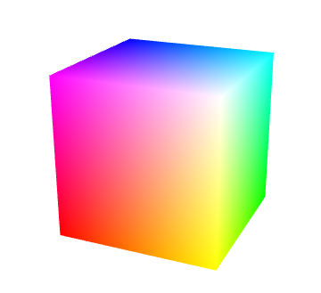

对应《WebGL编程指南》第七章 33-HelloCubes、34-ColoredCube
要点：立方体及其顶点坐标、gl.drawElements()
知识点
一、立方体
1.1 目的
迄今为止，本教程通过绘制一些简单的三角形，展示了 WebGL 的诸多特性。你对绘制三维对象的基础只是应该已经有了足够的了解。下面，我们就来绘制如下图所示的立方体。其8个顶点的颜色分别为白色、品红色、红色、黄色、绿色、青色、蓝色、黑色。在第5章层提过，为每个顶点定义颜色后，便面上的颜色会根据顶点颜色内插出来，形成一种光滑的渐变效果，新的程序名为 HelloCube。

1.2 思考与尝试
目前，我们都是调用 gl.drawArrays()方法来进行绘制操作的。考虑以下，如何用该函数绘制出一个立方体呢。我们只能使用 gl.TRIANGLES、gl.TRIANGLE_STRIP 或者 gl.TRIANGLE_FAN 模型来绘制三角形，那么最简单也就最直接的方法就是，通过绘制两个三角形来拼成立方体的一个矩形表面。换句话说，为了绘制四个顶点（v0, v1, v2, v3）组成的矩形表面，你可以分别绘制三角形（v0, v1, v2）和三角形（v0, v2, v3）。对立方体的所有表面都这样做就绘制出了整个立方体。在这种情况下，缓冲区内的顶点坐标应该是这样的：
立方体的每一面由2个三角形组成，每个三角形有3个顶点，所以每个面需要用6个顶点。立方体共有6个面，一共需要36个顶点。将36个顶点的数据写入缓冲区，再调用 gl.drawArrays(gl.TRIANGLES, 0, 36) 就可以绘制处立方体。问题是，立方体实际只有8个顶点，而我们却定义了36个之多，这是因为每个顶点会被多个三角形公用。
或者，你也可以使用 gl.TRIANGLE_FAN 模式来绘制立方体。在 gl.TRIANGLE_FAN 模式下，用4个顶点（v0, v1, v2, v3）就可以绘制出一个四方形，所以你只需要4x6=24个顶点。但是，如果这样做你就必须为立方体的每个面调用一次 gl.drawArrays()，一共需要6次调用。所以，两种绘制模式各有优缺点，没有一种是完美的。
1.3 解决方案——立方体的拆分
如你所愿，WebGL 确实提供了一种完美的方案：gl.drawElements()。使用该函数替代 gl.drawArryas()函数进行绘制，能够避免重复定义顶点，保持顶点数量最小。为此，你需要知道模型的每一个顶点的坐标，这些顶点坐标描述了整个模型。
我们将立方体拆成顶点和三角形。拆分规则：
- 立方体被拆成6个面：前、后、左、右、上、下
- 每个面都由两个三角形组成，与三角形列表中的两个三角形相关联。
- 每个三角形都有3个顶点，与顶点列表的3个顶点相关联。如下右图所示
- 三角形列表中的数字表示该三角形的3个顶点在顶点列表中的索引值。顶点列表共有8个顶点，索引值从0到7。
这样用一个数据结构就可以描述处立方体是怎样由顶点坐标和颜色构成的了。
1.4 通过顶点索引绘制物体——gl.drawElements()
到目前为止，我们都是使用 gl.drawArryas()进行绘制，现在我们要使用另一方法 gl.drawElements()。
两个方法看上去差不多，但后者有一些优势，我们稍后再解释。
首先，我们来看一下如何使用 gl.drawElements()。我们需要在 gl.ELEMENT_ARRAY_BUFFER（而不是之前一直使用的 gl.ARRAY_BUFFER）中指定顶点的索引值。所以两种方法最重要的区别就在于 gl.ELEMENT_ARRAY_BUFFER，它管理着具有索引结构的三维模型数据。
| 函数 | gl.drawElements(mode, count, type, offset) | |
|---|---|---|
| 参数 | mode | 指定绘制的方式，可接受以下常量符号[1] |
| count | 指定绘制顶点个数 | |
| type | 指定索引值数据类型（gl_UNSIGNED_BYTE或gl.UNSIGNED_SHORT） | |
| offset | 指定索引数组中开始绘制的位置，以字节为单位 | |
| 错误 | INVALID_ENUM | 传入的mode参数不是前述参数之一 |
| INVALID_VALUE | 参数count或offset是负数 |
[1] mode参数：gl.POINTS/gl.LINES/gl.LINE_STRIP/gl.LINE_LOOP/
gl.TRIANGLES/gl.TRIANGLE_STRIP/gl.TRIANGLE_FAN
这里可以对比
gl.drawArray()：
作用：执行顶点着色器，按照mode参数指定的方式绘制图形
参数：
mode，指定绘制的方式（同上）。
first, 指定从那个顶点开始绘制（整数型），0表示从第一个顶点开始画起。
count, 指定绘制需要多少个顶点（整数型），顶点着色器执行的次数，每次处理一个顶点。执行完后，片元着色器开始执行
返回值：无
错误：/
我们需要将顶点索引（三角形列表）写入到缓冲区中，并绑定到 gl.ELEMENT_ARRAY_BUFFER 上，其过程类似于调用 gl.drawArrays()时将顶点坐标写入缓冲区并将其绑定到 gl.ARRAY_BUFFER 上的过程。也就是说，可以继续使用 gl.bindBudder()和 gl.bufferData()来进行上述操作，只不过参数 target 要改为 gl.ELEMENT_ARRAY_BUFFER。
1.5 实例程序
代码1与ProjectiveView_mvpMatrix.js一样，使用了金字塔状的可视空间和透视投影变换，着色器部分没有改变。顶点着色器对顶点坐标进行了简单的变换，片元着色器接收varying变量并赋值给gl_FragColor，以对片元进行着色。
main函数的流程与 ProjectiveView_mvpMatrix.js 一样，回顾一下：
我们首先调用 initVertexBuffers()函数将顶点数据写入缓冲区，然后开启隐藏面消除，使 WebGL 能够根据立方体各表面的前后关系正确地进行绘制。
接着，设置视点和可视空间，把模型视图投影矩阵传给顶点着色器中的
u_MvpMatrix变量。最后，清空颜色和深度缓冲区，使用 gl.drawElements()绘制立方体。该函数的使用方法和效果是本例与 ProjectiveView_mvpMatrix.js 的主要区别，来看一下。
向缓冲区中写入顶点的坐标、颜色和索引
本例的 initVertexBuffers()函数通过缓冲区对象 verticesColors 向顶点着色器中的 attribute变量传顶点坐标和颜色信息，这一点与之前无异。但是，本例不再按照 verticesColors 中的顶点顺序来进行绘制，所以必须额外注意每个顶点的索引值，我们要通过索引值来指定绘制的顺序。比如说，第一个顶点的索引为0，第2个顶点的索引为1，等等。
initVertexBuffers(gl)函数部分：
1 | function initVertexBuffers(gl) { |
也许你会注意到，缓冲区对象 indexBuffer（第34行）中的数据来自于数组 indices（第23行），该数组以索引值的形式存储了绘制顶点的顺序。索引值是整型数，所以数组的类型是 Unit8Array。如果有超过256个顶点，那么应该使用 Uint16Array。indices 中的元素如下图中的三角形列表所示，每3个索引值为1组，指向3个顶点，由这3个顶点组成一个三角形。通常我们不需要手动创建这点顶点和索引数据，因为三维建模工具在第10章会帮助我们创建它们。
绑定缓冲区，以及向缓冲区写入索引数据的过程与之前示例程序中的很类似，区别就是绑定的目标由 gl.ARRAY_BUFFER 变成了 gl.ELEMENT_ARRAY_BUFFER。这个参数告诉 WebGL，该缓冲区中的内容是定点的索引值数据。
此时，WebGL 系统的内部状态如下图所示：
最后，我们调用 gl.drawElements(），就绘制出了立方体。
1 | gl.drawElements(gl.TRIANGLES, n, gl.UNSIGNED_BYTE, 0); |
在调用gl.drawElements()时，WebGL 首先从绑定到 gl.ELEMENT_ARRAY_BUFFER 的缓冲区中获取顶点的索引值，然后根据该索引值，从绑定到 gl.ARRAY_BUFFER 的缓冲区(即vertexColorBuffer)中获取顶点的坐标、颜色等信息，然后传递给 attribute 变量并执行顶点着色器。对每个索引值都这样做，最后就绘制出了整个立方体，而此时你只调用了一次 gl.drawElements()。这种方式通过索引来访问顶点数据，从而循环利用顶点信息，控制内存的开销，但代价是你需要通过索引来间接地访问顶点，在某种程度上使程序复杂化了。所以，gl.drawElements和 gl.drawArrays各有优劣，具体用哪一个取决于具体的系统需求。
虽然我们已经证明了 gl.drawElements是高效的绘制三维图形的方式，但还是漏了关键的一点：我们无法通过将颜色定义在索引值上，颜色仍然是依赖于顶点的。
考虑这样的情况：我们希望立方体的每个表面都是不同的单一颜色（而非颜色渐变效果）或者纹理图像。我们需要把每个面的颜色或纹理信息写入三角形、索引和顶点数据中。
二、为立方体的每个表面指定颜色
2.1 分析
效果实例：
顶点着色器进行的是逐顶点的计算，接受的是逐顶点的信息。这说明，如果你想指定表面的颜色，你也需要将颜色定义为逐顶点的信息，并传给顶点着色器。
比如：前表面由顶点v0、v1、v2、v3组成，若要将前表面涂成蓝色，那么就需要将这4个顶点都指定为蓝色。
但是，顶点v0 不仅在前表面上，也在右表面上和上表面上，如果你将 v0 指定为蓝色，那么它在另外两个表面上也会是蓝色，这不是我们想要的结果。
为了解决这个问题，我们需要创建多个具有相同顶点坐标的点，如下图所示。如果这样做，你就必须把那些具有相同坐标的顶点分开处理。
此时三角形列表，也就是顶点索引值序列，对每个面都指向一组不同的顶点，不再有前表面和上表面共享一个顶点的情况，这样一来，就可以实现前述的结果，为每个表面涂上不同的单色。我们也可以使用类似的方法为立方体的每个表面贴上不同的纹理，只需将上图的颜色值换成纹理坐标即可。
来看一下示例程序 ColoredCube 的代码，它绘制出了一个立方体，其每个表面涂上了不同的颜色。
2.2 代码分析
本例与 HelloCube 的主要区别是在于顶点数据存储在缓冲区中的形式：
- 在 HelloCube.js 中，顶点的坐标和颜色数据存储在同一个缓冲区中。虽然有着种种好处，但这样做略显笨重，本例中我们将顶点的坐标和颜色分别存储在不同的缓冲区中。
- 顶点数组、颜色数组和索引素组按照上图的配置进行了修改。
- 为了程序结构紧凑，定义了函数 initArrayBuffer(），封装了缓冲区对象的创建、绑定、数据写入和开启等操作。
核心代码如下：
1 | function initVertexBuffers(gl) { |
实例
代码1
1 | //HelloCube.js |
效果
代码2
1 | //ColoredCube.js |
效果
Tips: Please indicate the source and original author when reprinting or quoting this article.